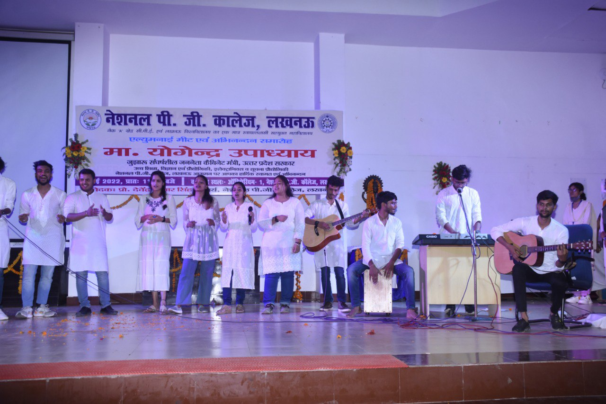
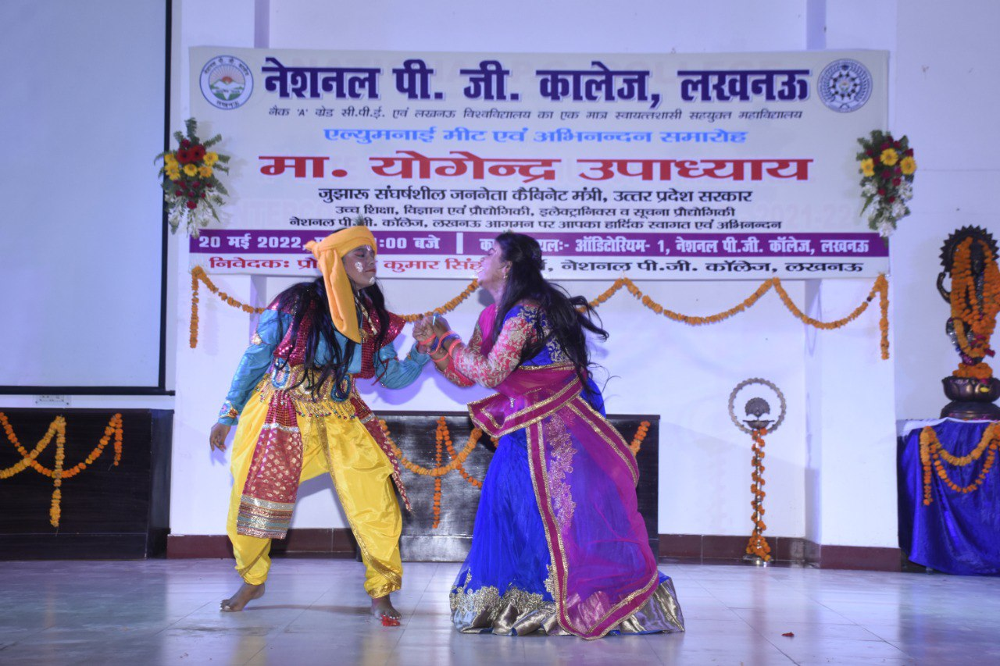

Notice
Alumni Meet is on 24th july 2024
Alumni Meet
The upcoming alumni meet at National PG College, set for July 24, 2024, promises to be a momentous occasion, bringing together former students from various batches to celebrate their shared history and achievements. Scheduled to take place in the college's beautifully adorned auditorium, the event will include inspiring speeches from distinguished alumni who will share their journeys and offer words of wisdom. Attendees can look forward to cultural performances, a tour of the newly renovated campus, and networking sessions designed to rekindle old friendships and establish new connections. This eagerly awaited gathering aims to honor the rich legacy of National PG College, fostering a sense of community and pride among its alumni.
About the College
Welcome to National Post Graduate College National Post Graduate College was established in 1974 by Late Chandra Bhanu Gupta (CM of Uttar Pradesh at that time), close to the banks of river Gomti. It is the only college in a city of 16 universities that enjoys the highest status of CPE and Autonomous Status. College provides you with UG and PG courses in Arts and Commerce faculties and UG courses in Science and Computer faculties. The college also offers UG and PG programs for skill development under Deen Dayal Upadhyay Kaushal Kendra. Well-equipped labs, a computerized rich library, e-library, data analysis center, and air-conditioned reading room are some of the basic educational facilities provided by our college. Various NSS and NCC programs aim to instil the idea of social welfare in students. The college also supports the physical wellness of students by giving them rigorous training for several indoor and outdoor sports. National Post Graduate College is one of the most reputed and recognized colleges of Lucknow best known for discipline among students. High-quality education is the ultimate pathway to success and our college administration believes in it.Events
-
Holi of Flowers
The college campus bursts into a riot of colors as students come together to celebrate the vibrant festival of Holi with flowers. Petals of various hues dance in the air, spreading joy and cheer. Amidst the fragrance of blossoms, laughter echoes through the corridors, bridging divides and fostering unity. The tradition of 'Holi of Flowers' fosters a sense of camaraderie among classmates, as they exchange floral greetings and sprinkle each other with fragrant petals, marking the arrival of spring with exuberance and warmth.It's a celebration that not only adds a splash of color to the college grounds but also infuses the spirit of harmony and togetherness among the student community.
-
Pre-Placement Week
Preplacement week is an important aspect of student life in the National P.G. College, especially for students in their third year. This year, the preplacement week was from 9 September to 15 September, and below is a brief outline of all the exciting and engaging events organised during the preplacement week. From September 9th to 15th, 2024, students attended sessions on skills matching (Dr. Charu Rawat), start-ups (Mr. Abhishake Nandan Srivastava), and alumni experiences. Career options (Mr. Ashish Agrawal, Mr. Vipul Keshwani), communication skills (Mr. Tarandeep Singh), career counseling (Mr. Yashwant Dhawaj Shah), and profile building (Mr. Leon Chung) were also covered.
-
Workshop On Financial Inclusion
Workshop on Financial Inclusion in association with RBI (20 - 21 October 2024) organized by the Department of Banking & Finance, DDUKK Over 300 participants attended the Workshop on Financial Inclusion organized by the Department of Banking & Finance, DDUKK. The Chief Guest was Smt. Sonali Das, GM, RBI Lucknow. Smt. Sonali guided all the students about their careers and shared the amazing experiences of her life which were memorable for the students.
-
Rangoli Competition
National P.G. Under the Amrit Mahotsav of Independence in the college, on 23 December 2024, a Rangoli competition was organized under the leadership of Dr. Shweta Sinha, Dr. Archana Singh, and Dr. Reena Srivastava, Program Officer of National Service Scheme, under the chairmanship of Principal Professor Dr. Devendra Kumar Singh. The competition was evaluated by Dr. Bhanu Shankar, Dr. Jyoti Bhargava, and Dr. Ritu Jain, senior professors of the college. Beautiful Rangolis were drawn by the students.
-
Welcome Of Alumni
Our cherished alumni were greeted with heartfelt warmth and tradition at our last alumni meet. Each returning member was honored with a traditional tilak ceremony, symbolizing respect and reverence. As tokens of our appreciation, momentos were presented to commemorate their achievements and enduring connection with the college. To add sweetness to the occasion, an array of delicious sweets was offered, reflecting the joy of reunion and celebration. It was a delightful evening filled with nostalgia, camaraderie, and the rekindling of old bonds, reminding everyone that the essence of our alma mater lives on in each of us.
Gallery
Testimonials
ChatGPT As a 2021 Science graduate from National Post Graduate College, Lucknow, I am now an Assistant Manager at SBI, Nasik. Thank you, NPGC, for shaping my future.
~ Sapna Singh
As an IPS officer in Morena, Maharashtra, I owe my success to National Post Graduate College, Lucknow. The inspiring faculty and unforgettable memories shaped my journey. Thank you, NPGC, for an exceptional foundation.
~ Adarsh Shukla
As an alumnus of National Post Graduate College, Lucknow, I cleared UGC NET, earned a PhD from IIT Roorkee in 2022, and worked at NMIMS. Now, I am an Assistant Professor at IIM Kashipur. Thank you, NPGC, for the foundation and motivation.
~ Shubham Sharma
As a proud alumnus of National Post Graduate College, Lucknow, I completed my BSc in 2016. The excellent education and support I received at NPGC paved the way for my career. Now serving as an Inspector in Central EXCIse and Customs in Nagpur, I am grateful for the solid foundation and unforgettable memories from my time at NPGC. Thank you for shaping my future.
~ Prince Tiwari
Welcome Back Alumni!
Get Involved Today
Join our alumni network and stay connected with your alma mater. Attend events, mentor current students, and give back to the college that helped shape your future.
Join NowDonate us
Your support can transform lives. By donating, you help us bring vital resources and hope to those in need. Every contribution counts, making a tangible impact on our mission. Join us in creating a brighter future—donate today!
Confirmation